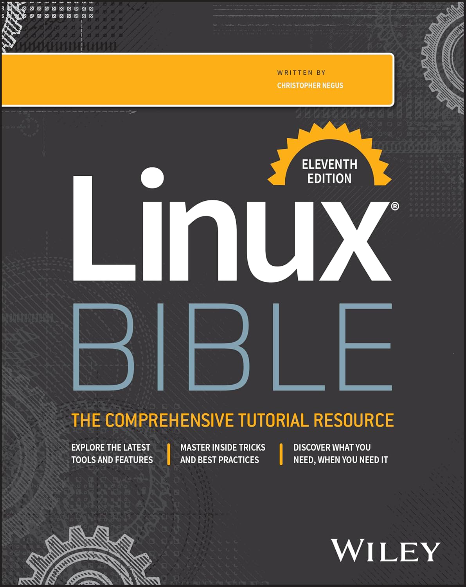

Slackware is a GNU/Linux distribution created by the Enlightened Patrick J. Volkerding, his distribution is the most faithful to the "KISS" principle, the most "EXPERT-FRIENDLY", the most "UNIX-LIKE", and the oldest one still active, it has become a lifestyle and a religion for many.
Slackware has long been seen as a ⛧ Satanic ⛧ religion, because its users are called Wizards and Witches by mouse pushers, since for them it is pure witchcraft to be able to use it…
To join the Church of Slackware, you only need to pronounce the Confession of Faith:
1st - There is no other system besides GNU, and Linux is one of its kernels.

Warning: Taking the Church of Slackware (or any church) too seriously may be harmful to your health.
Inspired by The Church of BSD